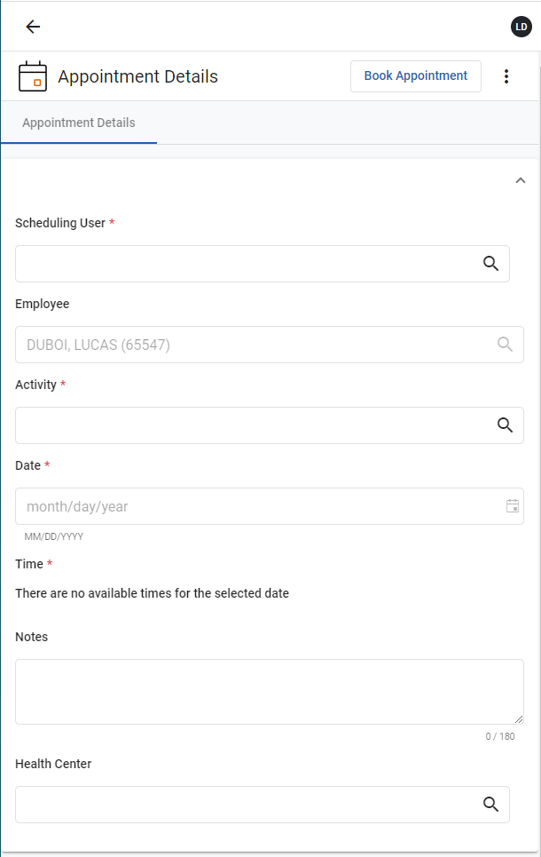

You can also create a new appointment by clicking My Tasks on the side menu, clicking Create New, and then clicking New Appointment. The Appointment Details form opens.

If a primary or secondary health center is defined in My Account, it will display on the Appointment Details form. If neither a primary nor secondary health center have been defined, the Health Center field on the Appointment Details form will provide a drop-down menu, allowing you to select a health center.
For the selected health center, the scheduling user field value may auto-populate. If the scheduling user field value does not populate, select a value from the picklist.
The scheduling user may or may not be on the Appointment form based on administrator settings. If the scheduling user field is not present on the Appointment form, then the system will automatically assign the appointment to a scheduling user.
If you select a value for the Scheduling User field first and the Health Center field is already defaulting to primary or secondary, then only the Activity field will filter.
If you select a value for the Activity field first and the Health Center field is already defaulting to primary or secondary, then only the Scheduling User field will filter.
The Activity picklist will display only those activities that have the Portal Activity checkbox selected, are associated with the selected health center, and have the Schedule and Exam Activity, Exam Activity Only, or Schedule Only activity type.
a. Date and blue circle - the next available date for appointment slots
b. Dates with green circles – other dates with available appointment slots
c. Dates greyed out – dates that do not have any available appointment slots
Depending on the present time, the available time slot might be rounded to the next closest 5-minute interval. If the appointment type does not have a default time slot length defined, then 30 minutes will be used.
The user's time zone is respected when determining available time slots.
The Appointment Details form will close, and you will be taken back to the My Tasks view.
The appointment will display in the Incomplete list. It will be named Attend [activity] and will have a status of Scheduled for [date and time].
If you are using a mobile device, the status of your appointments will not be provided.